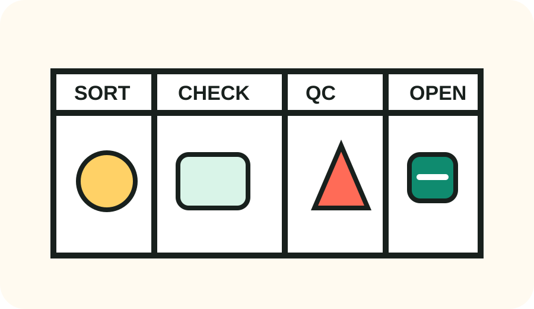

Sort the KakoBuy spreadsheet before the haul sorts you.
A cleaner entry point for spreadsheet shoppers: choose a category, run the quick buyer checks, then open the full product directory when you are ready to compare agent-ready finds.

Category bins
Compact routes for the full product directory. No fake inventory clone here.
Shoes
Sneakers, runners, slides, and boot finds with sizing notes before you open the product page.
02Hoodies & Sweaters
Pullover, zip-up, knit, and fleece finds sorted for weight, fabric clues, and print placement.
03T-Shirts
Graphic tees, blanks, oversized cuts, and seasonal basics with quick quality checks.
04Jackets
Outerwear finds with material, zipper, lining, and weather-use notes.
05Pants & Shorts
Denim, cargos, sweats, shorts, and relaxed bottoms with fit reminders.
06Headwear
Caps, beanies, bucket hats, and small accessories where shape and embroidery matter.
07Sets
Matching tops and bottoms, tracksuits, and coordinated fits that need color consistency checks.
08Underwear
Base-layer and underpants finds where comfort, material, and sizing deserve extra care.
09Jersey
Football, basketball, and fan jerseys with patch, number, and fabric inspection tips.
10Accessories
Bags, belts, wallets, jewelry, socks, and small haul add-ons.
11Others
Odd finds, home goods, seasonal items, and anything that does not fit cleanly elsewhere.
Quick outbound rack
Use the table when you already know what type of item you want. Each route opens the matching live category page.
Buyer notes
Short guides for common KakoBuy spreadsheet questions.
Is KakoBuy Legit? A Spreadsheet Buyer Safety Check
Read the practical trust checks buyers should run before opening a KakoBuy spreadsheet find, ordering through an agent, or building a haul.
GuideKakoBuy Shipping Calculator Notes: Estimate Before You Haul
A simple shipping estimate workflow for buyers comparing item weight, rehearsal packaging, domestic freight, and final parcel choices.
GuideKakoBuy Coupons and Invitation Codes: Use Them Without Chasing Noise
How to treat coupons as a small checkout bonus, not the main reason to choose a product or route.
GuideKakoBuy Reddit and Discord Signals: What to Trust
How to read community posts, haul comments, QC feedback, and Discord chatter without mistaking hype for proof.
GuideBest KakoBuy Spreadsheet Workflow for 2026
A buyer-first workflow for turning spreadsheet browsing into cleaner category choices, better checks, and fewer impulse mistakes.
Before you click
- Check whether the item photos match the title.
- Look for size-table evidence, not only a familiar label.
- Estimate weight before adding heavy pieces to a haul.
- Use QC photos to confirm color, shape, stitching, and print placement.
What this site does
It keeps the spreadsheet path readable. The actual product data, prices, agent options, and checkout flow live on the linked product page, where details can change faster than a static guide can.
Open Full Directory